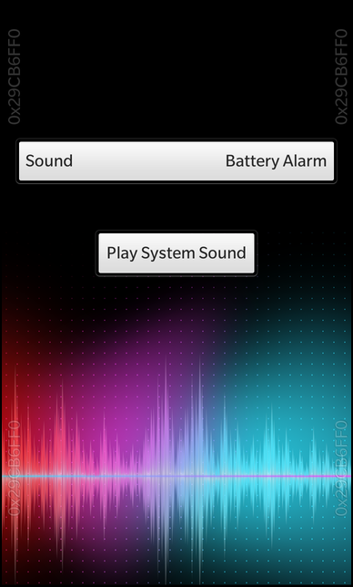

Files:
The System Sound example allows the user to test the various sounds for system events provided by the BB10 framework.

In this example we'll learn how to use the SystemSound class of the BB10 framework to play sounds for certain system events.
The UI of this sample application consists of a DropDown to select the type of event and a Button to play the sound that is associated with the selected event.
// The selector for system sounds DropDown { id: soundChooser horizontalAlignment: HorizontalAlignment.Center title: qsTr ("Sound") Option { text: qsTr ("Battery Alarm") value: SystemSound.BatteryAlarm selected: true } Option { text: qsTr ("Browser Start Event") value: SystemSound.BrowserStartEvent } Option { text: qsTr ("Camera Shutter Event") value: SystemSound.CameraShutterEvent } Option { text: qsTr ("Device Lock Event") value: SystemSound.DeviceLockEvent } Option { text: qsTr ("Device Unlock Event") value: SystemSound.DeviceUnlockEvent } Option { text: qsTr ("Device Tether Event") value: SystemSound.DeviceTetherEvent } Option { text: qsTr ("Device Untether Event") value: SystemSound.DeviceUntetherEvent } Option { text: qsTr ("General Notification") value: SystemSound.GeneralNotification } Option { text: qsTr ("Input Keypress") value: SystemSound.InputKeypress } Option { text: qsTr ("Recording Start Event") value: SystemSound.RecordingStartEvent } Option { text: qsTr ("Recording Stop Event") value: SystemSound.RecordingStopEvent } Option { text: qsTr ("Sapphire Notification") value: SystemSound.SapphireNotification } Option { text: qsTr ("System Master Volume Reference") value: SystemSound.SystemMasterVolumeReference } Option { text: qsTr ("Video Call Event") value: SystemSound.VideoCallEvent } Option { text: qsTr ("Video Call Outgoing Event") value: SystemSound.VideoCallOutgoingEvent } Option { text: qsTr ("Camera Burst Event") value: SystemSound.CameraBurstEvent } }
The DropDown contains one option for each event type that is provided by the SystemSound class. The 'value' property is set to the corresponding Type enum.
// The button to play the selected sound Button { horizontalAlignment: HorizontalAlignment.Center topMargin: 100 text: qsTr ("Play System Sound") onClicked: systemSound.play() }
Whenever the user clicks the 'Play System Sound' button, the play() method is invoked on the SystemSound object.
attachedObjects: [ SystemSound { id: systemSound sound: soundChooser.selectedValue } ]
The SystemSound object itself is created as attached object on the page. Its 'sound' property is bound against the currently selected value of the DropDown and is updated automatically whenever the user chooses a different system sound type.